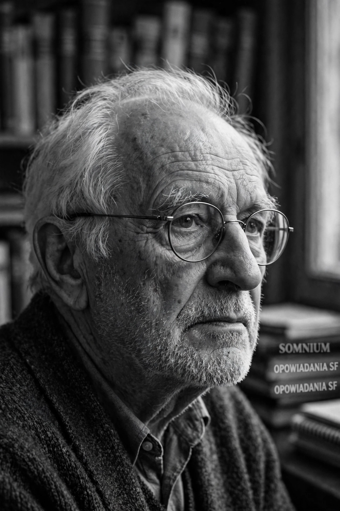

Stanisław Herman Lem (12 or 13 September 1921 – 27 March 2006) was a Polish writer of science fiction and essays on various subjects, including philosophy, futurology, and literary criticism. Many of his science fiction works are in a satirical and humorous vein. Lem's books have been translated into more than 50 languages and have sold more than 45 million copies, making him one of the most widely read science-fiction writers in the world.

| Stanisław Lem | |
|---|---|
| Born | 12/13 September 1921, Lwów, Poland (now Lviv, Ukraine) |
| Died | 27 March 2006, Kraków, Poland |
| Occupation | Writer |
| Genre | Science fiction, philosophy, satire |
| Notable works | Solaris, The Cyberiad, His Master's Voice, Fiasco |
Lem was born in Lwów, the son of a laryngologist. He studied medicine at Lwów University, interrupted by the Second World War; under the Nazi occupation he survived using false papers. After the war he settled in Kraków, completed his medical studies, and turned to writing, researching cybernetics and psychology at the Jagiellonian University.
His best-known novel, Solaris (1961), about an incomprehensible alien ocean planet, was filmed by Andrei Tarkovsky (1972) and Steven Soderbergh (2002). Other major works include The Cyberiad (1965), comic fables of the robot constructors Trurl and Klapaucius; His Master's Voice (1968); The Futurological Congress (1971); and Fiasco (1986). His essays, including Summa Technologiae (1964), anticipated virtual reality, nanotechnology and artificial intelligence.
See also: Solaris (novel) · Polish science fiction · Ijon Tichy